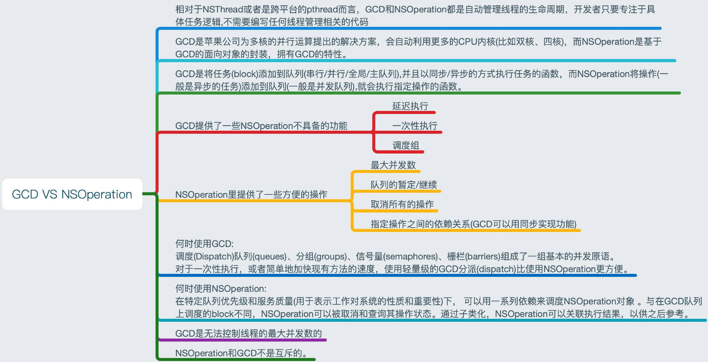

NSThread相关知识
说一下 GCD 并发队列实现机制
dispatch_async(dispatch_get_global_queue(DISPATCH_QUEUE_PRIORITY_DEFAULT, 0), ^{
self.object = [NSObject new];
});
https://juejin.im/post/57f6e9f85bbb50005b126e5f)
如何确保线程安全
加锁或属性使用原子性
NSMutableArray 和 NSMutableDictionary 是线程安全的吗？NSCache呢？
NSMutableArray 和 NSMutableDictionary 不是线程安全
NSMutableArray不是线程安全的，多个线程读写有可能造成数组越界问题,使用atomic也无法保证线程安全， 因为atomic只会保证setter,getter方法，使用[self.arr addObject:obj]如果循环添加可能就会出现崩溃的情况，因为addObject不是setter方法，
如果想保证安全只能针对数组的读写操作进行加锁。
NSCache 是线程安全
多线程的 并行 和 并发 有什么区别？
并发
并发指的是一种现象，一种经常出现，无可避免的现象。它描述的是“多个任务同时发生，需要被处理”这一现象。它的侧重点在于“发生”。比如有很多人排队等待检票，这一现象就可以理解为并发。
并行
并行指的是一种技术，一个同时处理多个任务的技术。它描述了一种能够同时处理多个任务的能力，侧重点在于“运行”。比如景点开放了多个检票窗口，同一时间内能服务多个游客。这种情况可以理解为并行。
并行的反义词就是串行，表示任务必须按顺序来，一个一个执行，前一个执行完了才能执行后一个。
我们经常挂在嘴边的“多线程”，正是采用了并行技术，从而提高了执行效率。因为有多个线程，所以计算机的多个CPU可以同时工作，同时处理不同线程内的指令。
总结
并发是一种现象，面对这一现象，我们首先创建多个线程，真正加快程序运行速度的，是并行技术。也就是让多个CPU同时工作。而多线程，是为了让多个CPU同时工作成为可能。
多线程有哪些优缺点
优点
可以充分利用CPU多核的资源来调度，可以提高计算效率
缺点
会出现线程不安全问题
20.GCD 与 NSOperationQueue 有哪些异同？
GCD是底层的C语言构成的API，而NSOperationQueue以及相关对象是基于GCD的Objective-C对象的封装，作为一个对象，NSOperationQueue为我们提供了更多的选择
NSOperationQueue任务可以很方便的取消（也只能取消未执行的任务），而GCD没法停止已经加入队列的任务(其实是有的，但需要许多复杂的代码)
不像GCD那样的是按FIFO顺序来执行的，NSOperation能够方便地通过依赖关系设置操作执行顺序，可以控制任务在特定的任务执行完后才执行；而GCD要实现这个功能的话，就需要通过barrier或者group来控制执行顺便，如果依赖关系复杂的话，代码逻辑就非常复杂了
NSOperation支持KVO(Key-Value Observing)，可以方便的监听任务的状态（完成、执行中、取消等等状态）
NSOperation可以设置同一个队列中任务的优先级，能够使同一个并行队列中的任务区分先后地执行，而在GCD中，我们只能区分不同任务队列的优先级，如果要区分block任务的优先级，也需要大量的复杂代码
还可以通过自定义NSOperation，封装任务逻辑，提高整个代码的复用度
